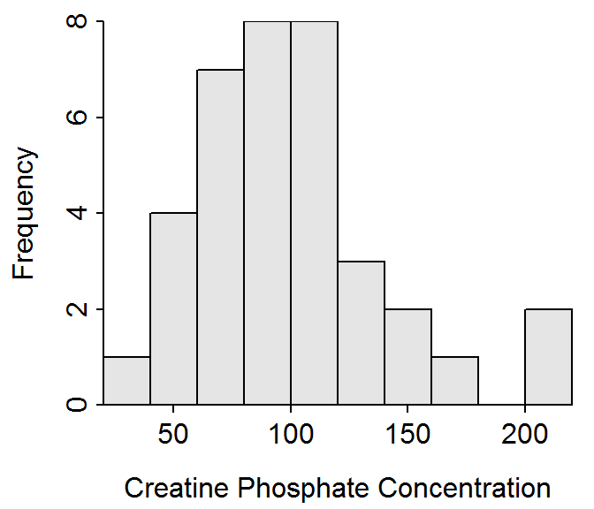
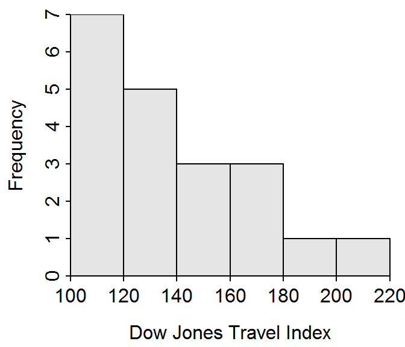
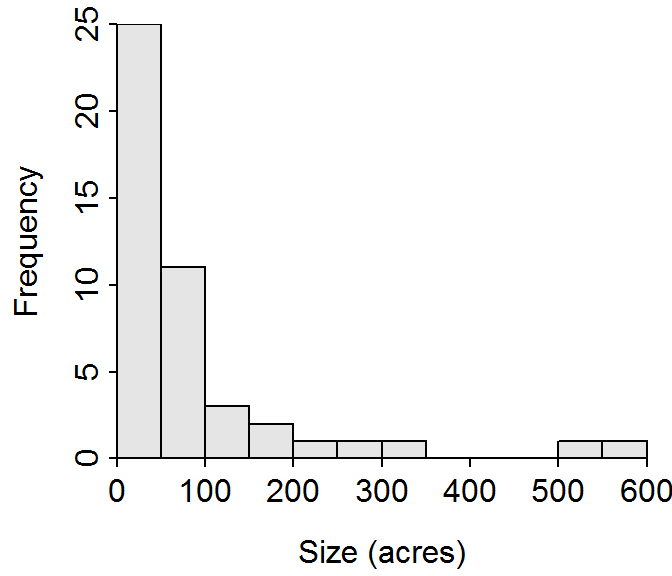

Time Spent Playing Video Games
The time spent playing video games is very strongly right-skewed with an extreme outlier at 30 hours and another outlier at approximately 15 hours. The center is at a median of 0 hours and the dispersion is from a Q1 of 0 hours to a Q3 of 1.2 hours. The median and IQR were used because of the skew and presence of outliers. [Results are derived from the figure and table presented in the question.]
Bank Transaction Times
The bank transaction times are strongly right-skewed with no obvious outliers. The center is at a median of 93.0 hours and the dispersion is from a Q1 of 60.3 hours to a Q3 of 145.2 hours. The median and IQR were used because of the skew and presence of outliers. [Results are derived from the figure and table presented in the question.]
Creatine Phosphate Concentrations
The distribution of creatine phosphate concentrations is slightly right-skewed with no obvious outliers (Figure 1). The center is at a mean of 98.3 and the dispersion is a standard deviation of 40.4 (Table 1). The mean and standard deviation were used because the distribution was not strongly skewed and outliers were not present. [Note that I did not call the individuals above 200 outliers because they were only one bar removed, there were two individuals, and they “felt” like an extension of the right-tail.]

Figure 1: Histogram of the creatine phosphate concentrations in 36 male volunteers.
Table 1: Summary statistics of the creatine phosphate concentrations in 36 male volunteers.
n mean sd min Q1 median Q3 max
36.0 98.3 40.4 25.0 67.8 94.5 118.2 203.0
R Code Appendix
library(NCStats)
df <- read.csv("data/CreatinePhosphate.csv")
hist(~cp,data=df,xlab="Creatine Phosphate Concentration")
Summarize(~cp,data=df,digits=1)
Air Pollution
The distribution of carbon monoxide levels arising from the oil refinery stack is strongly right-skewed with a possible outlier at 261 ppm (Figure 2). The center is at a median of 58.0 and the dispersion is from a Q1 of 41.0 to a Q3 of 85.5 (Table 2). The median and IQR were used because the distribution was strongly skewed and an outlier was present.

Figure 2: Histogram of the carbon monoxide levels arising from the oil refinery stack.
Table 2: Summary statistics of the carbon monoxide levels arising from the oil refinery stack.
n mean sd min Q1 median Q3 max
31.0 69.9 47.3 21.0 41.0 58.0 85.5 261.0
R Code Appendix
library(NCStats)
df <- read.csv("data/Polln.csv")
hist(~polln,data=df,xlab="Carbon Monoxide Levels")
Summarize(~polln,data=df,digits=1)
Dow Jones
The distribution of the May, 1996 Dow Jones Travel Index is strongly right-skewed with no obvious outliers present (Figure 3). The center is at a median of 130.0 and the dispersion is from a Q1 of 118.0 to a Q3 of 154.2 (Table 3). The median and IQR were used because the distribution was strongly skewed.

Figure 3: Histogram of the Dow Jones Travel Index for May, 1996.
Table 3: Summary statistics of the Dow Jones Travel Index for May, 1996.
n mean sd min Q1 median Q3 max
20.0 138.4 27.9 104.0 118.0 130.0 154.2 205.0
R Code Appendix
library(NCStats)
df <- read.csv("data/DowJonesTravel.csv")
hist(~djt,data=df,xlab="Dow Jones Travel Index")
Summarize(~djt,data=df,digits=1)
Zoo Sizes
The distribution of the physical size of zoos is strongly right-skewed with possible outliers between 500 and 600 acres (Figure 4). The center is at a median of 43.5 acres and the dispersion is from a Q1 of 15.0 to a Q3 of 90.0 acres (Table 4). The median and IQR were used because the distribution was strongly skewed and there were possible outliers.

Figure 4: Histogram of the size (acres) of a sample of zoos.
Table 4: Summary statistics of the size (acres) of a sample of zoos.
n mean sd min Q1 median Q3 max
46.0 84.5 120.3 5.0 15.0 43.5 90.0 580.0
R Code Appendix
library(NCStats)
df <- read.csv("data/Zoos.csv")
hist(~size,data=df,xlab="Size (acres)",w=50)
Summarize(~size,data=df,digits=1)